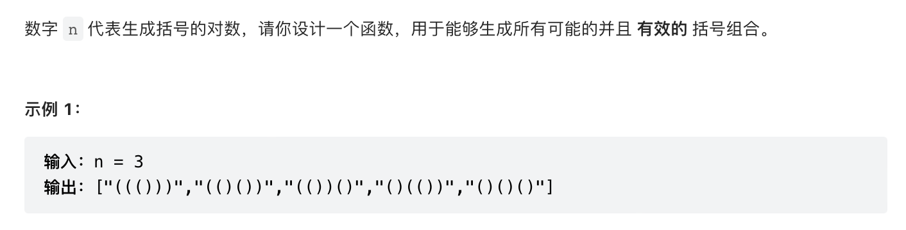

引言
对于22题括号生成和46题全排列，它俩的解法殊途同归，都是一种分治+回朔的解法，在已经确定\(n-1\)个元素后，再来决定第\(n\)种元素该如何取。
在第\(n\)个元素的视角来看，如果有\(a\)、\(b\)和\(c\)三种取法，那么在取任何一种后，计算方法又回到上一段的最后。打个比方，如果确定的是a，那么下次我们可以取\(b\)或者\(c\)；如果这次确定的是\(b\)，那么下次同样我们可以取\(a\)或者\(c\)。
由此引出一个问题，我们如何才能涉及到每一种取法呢？分治递归。
分治递归这种方法，一般当每一部分数据都包含同样的特征时就可以使用。比如遍历二叉树时，每一个节点都含有一个左孩子和一个右孩子，当遍历到这个节点的某个孩子时，又可以对它的孩子进行与它本身同样的操作，这样我们就可以对每个孩子进行递归。
回到问题，当我们确定第\(n\)个节点时，此时就分出了\(m\)(方案数)种可能，而这m种方案各自又会分出具有同样特征的\(m-1\)种方案。
此时会抛出另一种问题，我们如何才能知道我们已经确定的元素是哪些，以便于我们在下次确定元素时不会和前面已确定的元素重复？
括号生成
在括号生成问题中，由于每个括号包括一个左括弧和一个右括弧，因此我们可以用left来记录左括弧数，用right来记录右括弧数。如果我们迭代到某一步，发现可以使用的左括弧和右括弧的数量都已经没有了，那么我们就可以确定我们已经把所有的括弧对都加进字符串，此时直接返回字符串就可以了，否则我们可以选择下一次是添加左括弧还是添加右括弧，以此类推。

代码如下: 1
2
3
4
5
6
7
8
9
10
11
12
13
14class Solution {
void iter(vector<string>& ans, int left, int right, string current) {
if (!left && !right) ans.push_back(current);
if (left) iter(ans, left-1, right+1, current+"(");
if (right) iter(ans, left, right-1, current+")");
}
public:
vector<string> generateParenthesis(int n) {
vector<string> ans;
iter(ans, n, 0, "");
return ans;
}
};ans中，如果仍然还有左括弧或者右括弧没有添加到字符串，那么我们可以添加左括弧或者右括弧，将这两种选择分而治之，每个人都分化出不同的括弧组合类型。
需要注意的是，由于我们只有先添加左括弧才能再添加右括弧，所以我们刚开始时右括弧数量为\(0\)，只有在某个左括弧添加进去后，我们才使右括弧数量加一。
全排列
在全排列问题中，我们不可以再用n个变量来记录我们的选择，因为此时需要全排列的元素我们无法确定到底有几个，但是根据题目下方的提示，我们发现最多只有\(6\)个元素进行全排列。 
而且因为每种元素只有已选中和未选中两种状态，所以可以用0和1来代表选中的状态，如果我们有\(6\)个元素，那么只需要一个取值\(0\)到\(2^{6}-1\)之间的整数，化为二进制后取值范围将在\(b\)x\(000000\)到\(b\)x\(111111\)之间，每一位是\(0\)时代表可以被选中，每一位是\(1\)时代表已经被选中。
分治方法也如同括号生成算法，当每找到一个\(0\)时就可以开启一个分支，从而可以取遍每种情况。算法如下:
1 | class Solution { |
其中每个元素会产生\(n!\)种后缀，又存在\(n\)个元素，所以时间复杂度为\(O(n\times{n!})\)。